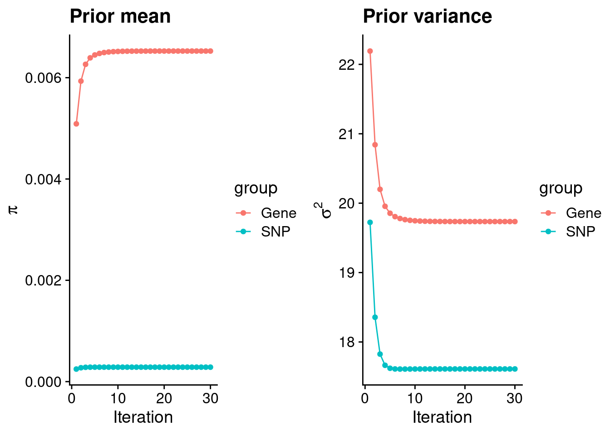
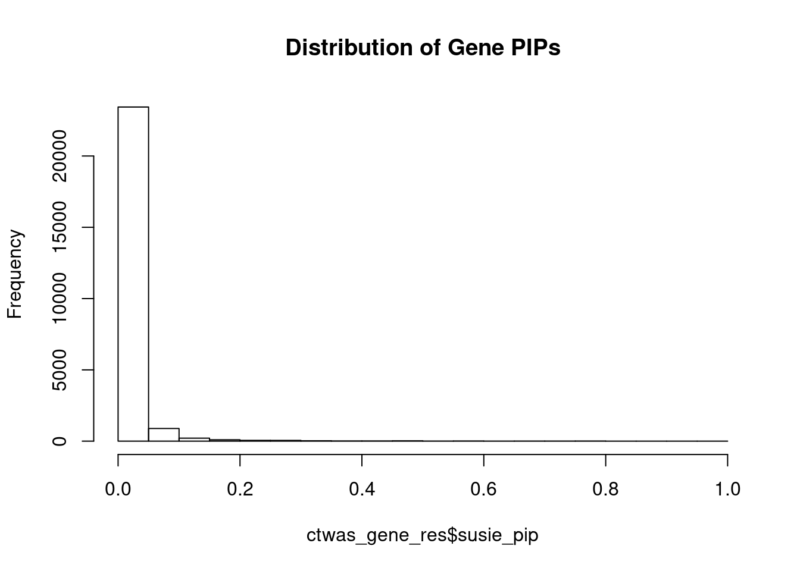
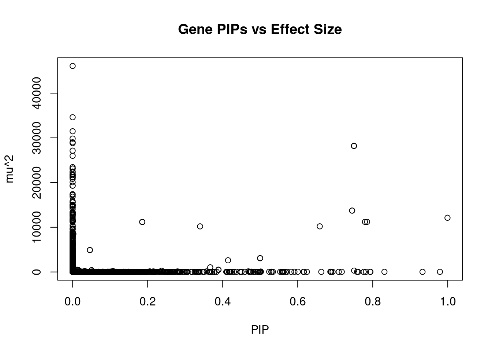
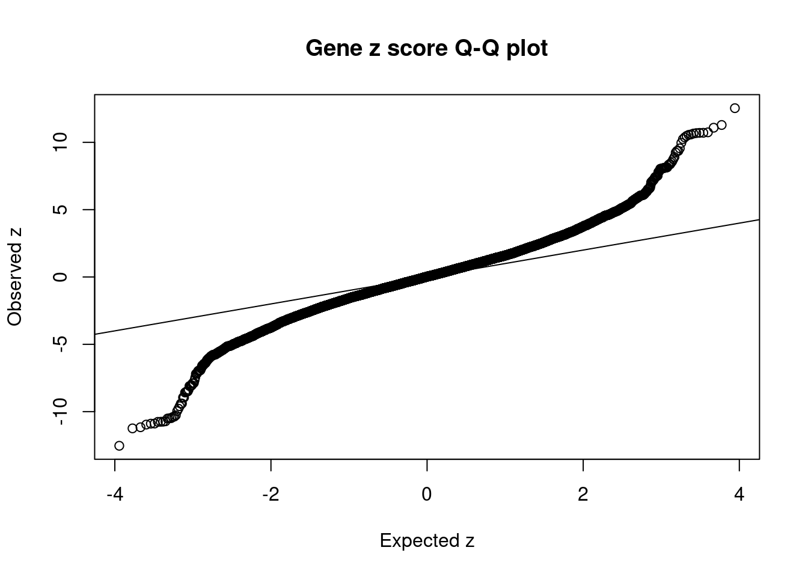
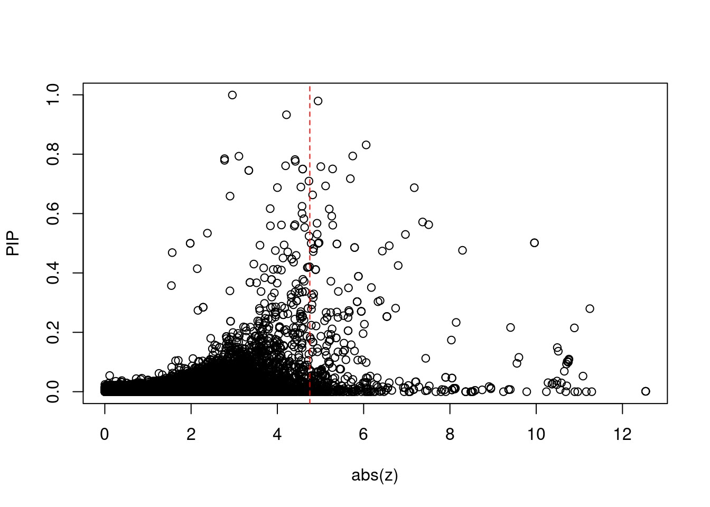
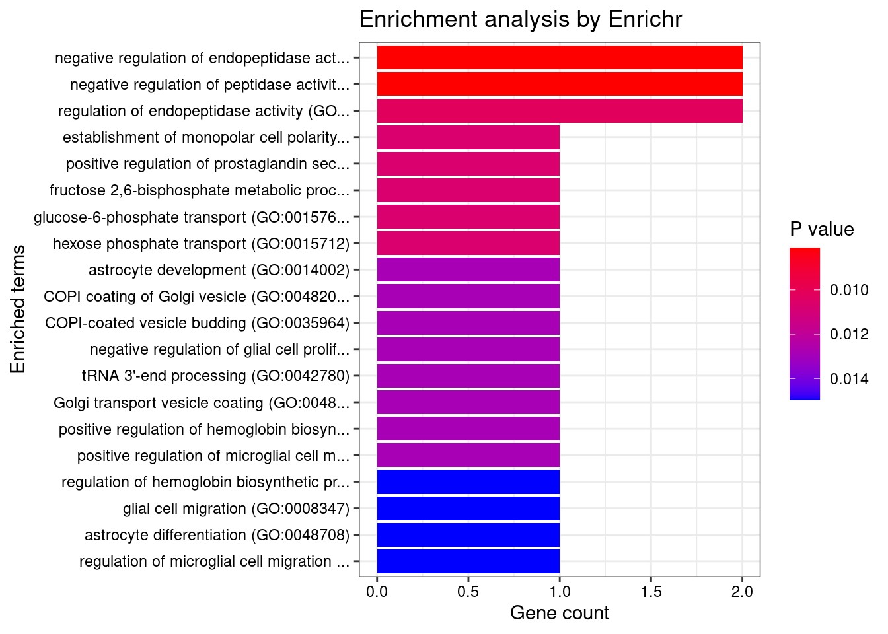
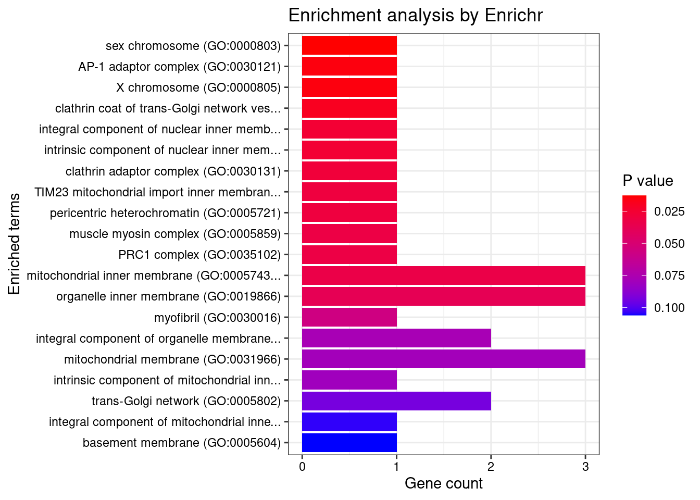
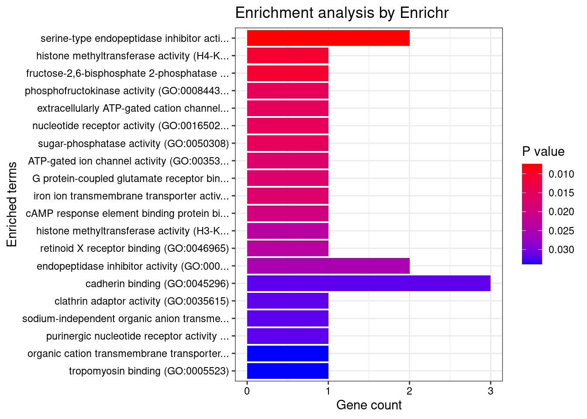
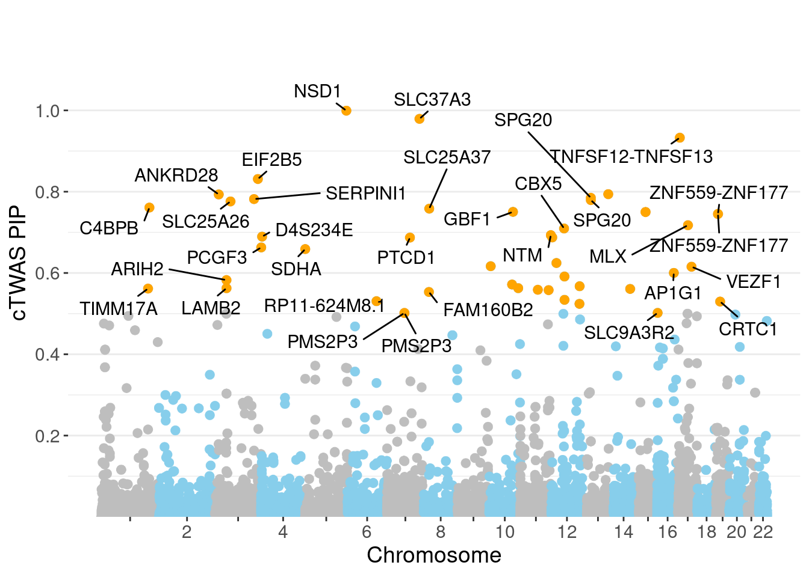
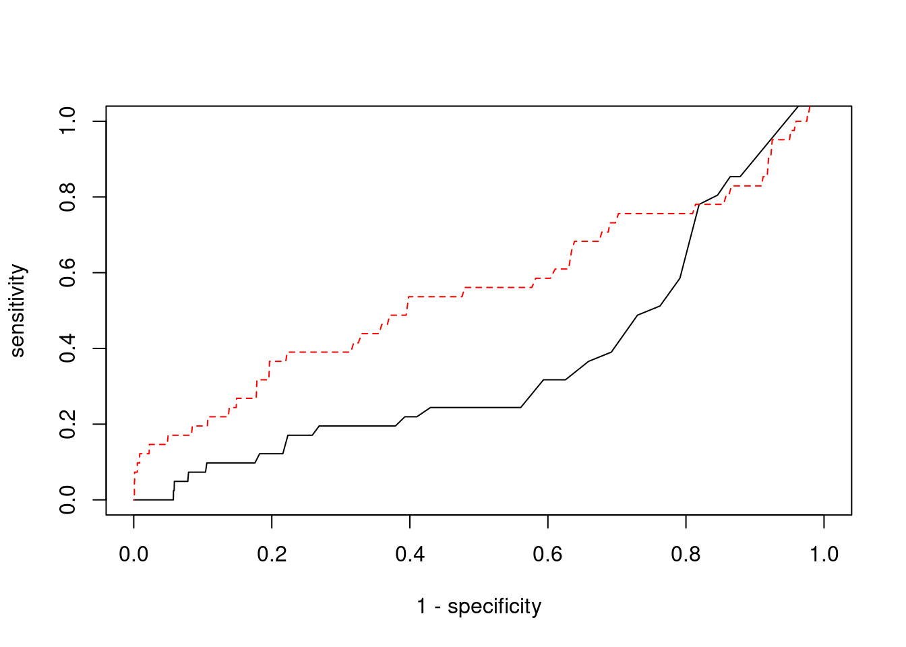

Last updated: 2022-02-22
Checks: 6 1
Knit directory: cTWAS_analysis/
This reproducible R Markdown analysis was created with workflowr (version 1.6.2). The Checks tab describes the reproducibility checks that were applied when the results were created. The Past versions tab lists the development history.
Great! Since the R Markdown file has been committed to the Git repository, you know the exact version of the code that produced these results.
Great job! The global environment was empty. Objects defined in the global environment can affect the analysis in your R Markdown file in unknown ways. For reproduciblity it’s best to always run the code in an empty environment.
The command set.seed(20211220) was run prior to running the code in the R Markdown file. Setting a seed ensures that any results that rely on randomness, e.g. subsampling or permutations, are reproducible.
Great job! Recording the operating system, R version, and package versions is critical for reproducibility.
Nice! There were no cached chunks for this analysis, so you can be confident that you successfully produced the results during this run.
Using absolute paths to the files within your workflowr project makes it difficult for you and others to run your code on a different machine. Change the absolute path(s) below to the suggested relative path(s) to make your code more reproducible.
| absolute | relative |
|---|---|
| /project2/xinhe/shengqian/cTWAS/cTWAS_analysis/data/ | data |
| /project2/xinhe/shengqian/cTWAS/cTWAS_analysis/code/ctwas_config.R | code/ctwas_config.R |
Great! You are using Git for version control. Tracking code development and connecting the code version to the results is critical for reproducibility.
The results in this page were generated with repository version 1058990. See the Past versions tab to see a history of the changes made to the R Markdown and HTML files.
Note that you need to be careful to ensure that all relevant files for the analysis have been committed to Git prior to generating the results (you can use wflow_publish or wflow_git_commit). workflowr only checks the R Markdown file, but you know if there are other scripts or data files that it depends on. Below is the status of the Git repository when the results were generated:
Ignored files:
Ignored: .ipynb_checkpoints/
Untracked files:
Untracked: Rplot.png
Untracked: analysis/.ipynb_checkpoints/
Untracked: analysis/Glucose_Adipose_Subcutaneous.Rmd
Untracked: analysis/Glucose_Adipose_Visceral_Omentum.Rmd
Untracked: analysis/Splicing_Test.Rmd
Untracked: code/.ipynb_checkpoints/
Untracked: code/AF_out/
Untracked: code/BMI_S_out/
Untracked: code/BMI_out/
Untracked: code/Glucose_out/
Untracked: code/LDL_S_out/
Untracked: code/T2D_out/
Untracked: code/ctwas_config.R
Untracked: code/mapping.R
Untracked: code/out/
Untracked: code/run_AF_analysis.sbatch
Untracked: code/run_AF_analysis.sh
Untracked: code/run_AF_ctwas_rss_LDR.R
Untracked: code/run_BMI_analysis.sbatch
Untracked: code/run_BMI_analysis.sh
Untracked: code/run_BMI_analysis_S.sbatch
Untracked: code/run_BMI_analysis_S.sh
Untracked: code/run_BMI_ctwas_rss_LDR.R
Untracked: code/run_BMI_ctwas_rss_LDR_S.R
Untracked: code/run_Glucose_analysis.sbatch
Untracked: code/run_Glucose_analysis.sh
Untracked: code/run_Glucose_ctwas_rss_LDR.R
Untracked: code/run_LDL_analysis_S.sbatch
Untracked: code/run_LDL_analysis_S.sh
Untracked: code/run_LDL_ctwas_rss_LDR_S.R
Untracked: code/run_T2D_analysis.sbatch
Untracked: code/run_T2D_analysis.sh
Untracked: code/run_T2D_ctwas_rss_LDR.R
Untracked: data/.ipynb_checkpoints/
Untracked: data/AF/
Untracked: data/BMI/
Untracked: data/BMI_S/
Untracked: data/Glucose/
Untracked: data/LDL_S/
Untracked: data/T2D/
Untracked: data/TEST/
Untracked: data/UKBB/
Untracked: data/UKBB_SNPs_Info.text
Untracked: data/gene_OMIM.txt
Untracked: data/gene_pip_0.8.txt
Untracked: data/mashr_Heart_Atrial_Appendage.db
Untracked: data/mashr_sqtl/
Untracked: data/summary_known_genes_annotations.xlsx
Untracked: data/untitled.txt
Unstaged changes:
Modified: analysis/BMI_Brain_Cortex.Rmd
Modified: analysis/LDL_Liver_S.Rmd
Modified: analysis/index.Rmd
Note that any generated files, e.g. HTML, png, CSS, etc., are not included in this status report because it is ok for generated content to have uncommitted changes.
These are the previous versions of the repository in which changes were made to the R Markdown (analysis/BMI_Brain_Caudate_basal_ganglia_S.Rmd) and HTML (docs/BMI_Brain_Caudate_basal_ganglia_S.html) files. If you’ve configured a remote Git repository (see ?wflow_git_remote), click on the hyperlinks in the table below to view the files as they were in that past version.
| File | Version | Author | Date | Message |
|---|---|---|---|---|
| Rmd | 1058990 | sq-96 | 2022-02-22 | update |
#number of imputed weights
nrow(qclist_all)[1] 24857#number of imputed weights by chromosome
table(qclist_all$chr)
1 2 3 4 5 6 7 8 9 10 11 12 13 14 15 16
2282 1729 1489 960 989 1246 1379 869 980 1111 1486 1240 455 918 849 1169
17 18 19 20 21 22
1692 363 1768 786 333 764 #number of imputed weights without missing variants
sum(qclist_all$nmiss==0)[1] 22827#proportion of imputed weights without missing variants
mean(qclist_all$nmiss==0)[1] 0.9183#add z scores to results
load(paste0(results_dir, "/", analysis_id, "_expr_z_gene.Rd"))
ctwas_gene_res$z <- z_gene[ctwas_gene_res$intron_id,]$z
z_snp <- z_snp[z_snp$id %in% ctwas_snp_res$id,]
ctwas_snp_res$z <- z_snp$z[match(ctwas_snp_res$id, z_snp$id)]
#merge gene and snp results with added information
ctwas_snp_res$genename=NA
ctwas_snp_res$gene_type=NA
ctwas_snp_res$intron_id=NA
ctwas_res <- rbind(ctwas_gene_res,
ctwas_snp_res[,colnames(ctwas_gene_res)])
#get number of eQTL for geens
num_eqtl <- c()
for (i in 1:22){
load(paste0(results_dir, "/", analysis_id, "_expr_chr", i, ".exprqc.Rd"))
num_eqtl <- c(num_eqtl, unlist(lapply(wgtlist, nrow)))
}
ctwas_gene_res$num_eqtl <- num_eqtl[ctwas_gene_res$intron_id]
#store columns to report
report_cols <- colnames(ctwas_gene_res)[!(colnames(ctwas_gene_res) %in% c("type", "region_tag1", "region_tag2", "cs_index", "gene_type", "z_flag", "id", "chrom", "pos"))]
first_cols <- c("genename", "region_tag")
report_cols <- c(first_cols, report_cols[!(report_cols %in% first_cols)])
report_cols_snps <- c("id", report_cols[-1])
report_cols_snps <- report_cols_snps[!(report_cols_snps %in% "num_eqtl")]
#get number of SNPs from s1 results; adjust for thin argument
ctwas_res_s1 <- data.table::fread(paste0(results_dir, "/", analysis_id, "_ctwas.s1.susieIrss.txt"))
n_snps <- sum(ctwas_res_s1$type=="SNP")/thin
rm(ctwas_res_s1)
#estimated group prior
estimated_group_prior <- group_prior_rec[,ncol(group_prior_rec)]
names(estimated_group_prior) <- c("gene", "snp")
estimated_group_prior["snp"] <- estimated_group_prior["snp"]*thin #adjust parameter to account for thin argument
print(estimated_group_prior) gene snp
0.0065257 0.0002851 #estimated group prior variance
estimated_group_prior_var <- group_prior_var_rec[,ncol(group_prior_var_rec)]
names(estimated_group_prior_var) <- c("gene", "snp")
print(estimated_group_prior_var) gene snp
19.73 17.61 #report sample size
print(sample_size)[1] 336107#report group size
group_size <- c(nrow(ctwas_gene_res), n_snps)
print(group_size)[1] 24857 7535010#estimated group PVE
estimated_group_pve <- estimated_group_prior_var*estimated_group_prior*group_size/sample_size #check PVE calculation
names(estimated_group_pve) <- c("gene", "snp")
print(estimated_group_pve) gene snp
0.009524 0.112580 #compare sum(PIP*mu2/sample_size) with above PVE calculation
c(sum(ctwas_gene_res$PVE),sum(ctwas_snp_res$PVE))[1] 0.3663 17.4902
genename region_tag susie_pip mu2 PVE
24195 NSD1 5_106 0.9993 12124.72 3.605e-02
24247 SLC37A3 7_86 0.9792 26.95 7.853e-05
24565 TNFSF12-TNFSF13 17_7 0.9328 28.67 7.958e-05
24035 EIF2B5 3_113 0.8312 37.28 9.220e-05
15477 TEX29 13_60 0.7939 30.81 7.277e-05
3977 ANKRD28 3_11 0.7932 21.70 5.121e-05
15202 SPG20 13_13 0.7849 11205.40 2.617e-02
5021 SERPINI1 3_103 0.7819 23.53 5.474e-05
15201 SPG20 13_13 0.7794 11205.40 2.598e-02
4497 SLC25A26 3_45 0.7760 23.88 5.513e-05
23984 C4BPB 1_105 0.7610 22.43 5.077e-05
9800 SLC25A37 8_24 0.7583 25.94 5.853e-05
24277 GBF1 10_65 0.7504 303.68 6.780e-04
16729 TMOD3 15_21 0.7500 28194.52 6.291e-02
16728 TMOD3 15_21 0.7500 28194.52 6.291e-02
24803 ZNF559-ZNF177 19_9 0.7452 13729.99 3.044e-02
24802 ZNF559-ZNF177 19_9 0.7452 13729.99 3.044e-02
19125 MLX 17_25 0.7175 31.43 6.709e-05
14406 CBX5 12_33 0.7095 25.59 5.402e-05
24371 NTM 11_82 0.6931 28.63 5.904e-05
intron_id z num_eqtl
24195 intron_5_177235945_177239756 2.957 1
24247 intron_7_140348767_140351273 -4.944 2
24565 intron_17_7559702_7560049 -4.211 2
24035 intron_3_184278313_184283785 6.058 2
15477 intron_13_111320948_111328183 -5.747 2
3977 intron_3_15677627_15678209 3.108 1
15202 intron_13_36312477_36314227 -2.776 1
5021 intron_3_167735823_167789111 -4.409 2
15201 intron_13_36312477_36313968 2.776 1
4497 intron_3_66304537_66346364 -4.417 1
23984 intron_1_207062716_207063143 4.191 1
9800 intron_8_23529212_23566108 5.008 1
24277 intron_10_102260116_102344051 -5.281 1
16729 intron_15_51924578_51934250 4.586 1
16728 intron_15_51924578_51931031 -4.586 1
24803 intron_19_9364948_9376316 -3.338 1
24802 intron_19_9364948_9371610 3.338 1
19125 intron_17_42568943_42569204 5.692 1
14406 intron_12_54257692_54280008 -4.732 1
24371 intron_11_131582378_131660929 -5.118 1
genename region_tag susie_pip mu2 PVE
10547 CCDC171 9_13 0.000e+00 46076 0.000e+00
24329 NT5C2 10_66 0.000e+00 34602 0.000e+00
23849 CDK11A 1_1 0.000e+00 31467 0.000e+00
24326 NT5C2 10_66 0.000e+00 29831 0.000e+00
24356 BDNF-AS 11_19 0.000e+00 29001 0.000e+00
20850 MAST3 19_14 0.000e+00 28820 0.000e+00
16728 TMOD3 15_21 7.500e-01 28195 6.291e-02
16729 TMOD3 15_21 7.500e-01 28195 6.291e-02
20849 MAST3 19_14 0.000e+00 27131 0.000e+00
23930 MAST2 1_29 1.199e-14 25981 9.269e-16
13356 MRPL21 11_38 0.000e+00 23443 0.000e+00
13358 IGHMBP2 11_38 0.000e+00 23134 0.000e+00
16664 CATSPER2P1 15_16 0.000e+00 23126 0.000e+00
16730 TMOD3 15_21 0.000e+00 22461 0.000e+00
23929 TMEM69 1_29 0.000e+00 22284 0.000e+00
24355 BDNF-AS 11_19 0.000e+00 21937 0.000e+00
24242 ZKSCAN3 6_22 0.000e+00 21677 0.000e+00
23923 NASP 1_29 0.000e+00 21635 0.000e+00
23924 NASP 1_29 0.000e+00 21635 0.000e+00
23920 NASP 1_29 0.000e+00 21245 0.000e+00
intron_id z num_eqtl
10547 intron_9_15888088_15888983 -7.903 1
24329 intron_10_103174982_103181185 5.037 1
23849 intron_1_1722831_1734690 4.905 1
24326 intron_10_103111805_103139406 -4.356 2
24356 intron_11_27640005_27659171 -1.335 1
20850 intron_19_18147044_18147443 5.474 2
16728 intron_15_51924578_51931031 -4.586 1
16729 intron_15_51924578_51934250 4.586 1
20849 intron_19_18147017_18147443 -5.232 2
23930 intron_1_45997799_46000959 -4.325 1
13356 intron_11_68898012_68900535 4.262 2
13358 intron_11_68929357_68933299 4.583 2
16664 intron_15_43744219_43744395 -4.508 1
16730 intron_15_51938260_51947292 -2.672 2
23929 intron_1_45691110_45693204 4.454 1
24355 intron_11_27640005_27658241 -5.845 1
24242 intron_6_28363815_28365426 -5.535 1
23923 intron_1_45616393_45616626 -4.289 1
23924 intron_1_45616703_45618061 4.289 1
23920 intron_1_45591270_45600385 3.951 1 genename region_tag susie_pip mu2 PVE
16729 TMOD3 15_21 0.75000 28194.5 0.0629142
16728 TMOD3 15_21 0.75000 28194.5 0.0629142
24195 NSD1 5_106 0.99932 12124.7 0.0360494
24803 ZNF559-ZNF177 19_9 0.74518 13730.0 0.0304406
24802 ZNF559-ZNF177 19_9 0.74518 13730.0 0.0304406
15202 SPG20 13_13 0.78487 11205.4 0.0261666
15201 SPG20 13_13 0.77936 11205.4 0.0259828
6097 SDHA 5_1 0.65881 10204.8 0.0200026
6096 CCDC127 5_1 0.33974 10199.7 0.0103100
15203 SPG20 13_13 0.18574 11184.7 0.0061808
15205 SPG20 13_13 0.18574 11184.7 0.0061808
15204 SPG20 13_13 0.18574 11184.7 0.0061808
19069 KRT10 17_24 0.49985 3087.2 0.0045913
19070 KRT10 17_24 0.49985 3087.2 0.0045913
17757 TNRC6A 16_21 0.41433 2613.0 0.0032211
6904 SFXN1 5_105 0.36685 1038.0 0.0011329
24277 GBF1 10_65 0.75037 303.7 0.0006780
24154 TMEM161B-AS1 5_52 0.04595 4902.1 0.0006702
24153 TMEM161B-AS1 5_52 0.04595 4902.1 0.0006702
17759 TNRC6A 16_21 0.38872 495.6 0.0005732
intron_id z num_eqtl
16729 intron_15_51924578_51934250 4.586 1
16728 intron_15_51924578_51931031 -4.586 1
24195 intron_5_177235945_177239756 2.957 1
24803 intron_19_9364948_9376316 -3.338 1
24802 intron_19_9364948_9371610 3.338 1
15202 intron_13_36312477_36314227 -2.776 1
15201 intron_13_36312477_36313968 2.776 1
6097 intron_5_228333_230876 2.903 1
6096 intron_5_216859_218093 2.900 1
15203 intron_13_36335832_36346225 -2.819 1
15205 intron_13_36335832_36346582 2.819 1
15204 intron_13_36335832_36346240 -2.819 1
19069 intron_17_40818482_40818767 -1.980 1
19070 intron_17_40818482_40818820 -1.980 1
17757 intron_16_24791817_24794544 -2.143 1
6904 intron_5_175516663_175521919 3.518 1
24277 intron_10_102260116_102344051 -5.281 1
24154 intron_5_88270585_88410073 8.048 1
24153 intron_5_88270585_88282042 -8.048 1
17759 intron_16_24805151_24805674 5.878 1 genename region_tag susie_pip mu2 PVE
4317 RBM6 3_35 1.332e-03 918.14 3.640e-06
4320 RBM6 3_35 1.291e-03 918.63 3.527e-06
4321 RBM6 3_35 1.291e-03 918.63 3.527e-06
2213 DNAJC27-AS1 2_15 4.463e-05 188.55 2.504e-08
7452 C6orf106 6_28 2.797e-01 119.22 9.921e-05
2211 DNAJC27-AS1 2_15 4.756e-05 185.48 2.624e-08
7453 UHRF1BP1 6_28 5.256e-02 115.51 1.806e-05
4307 RNF123 3_35 1.445e-11 831.92 3.576e-14
24357 BDNF-AS 11_19 0.000e+00 1996.48 0.000e+00
1680 LMOD1 1_102 2.149e-01 112.47 7.192e-05
17823 SH2B1 16_23 1.098e-01 65.68 2.146e-05
17825 SH2B1 16_23 1.065e-01 65.51 2.075e-05
17821 ATXN2L 16_23 1.006e-01 65.24 1.952e-05
17820 ATXN2L 16_23 9.932e-02 65.17 1.926e-05
17817 RP11-57A19.4 16_23 1.022e-01 65.84 2.001e-05
17844 TMEM219 16_24 1.972e-02 91.96 5.395e-06
17796 NPIPB7 16_23 9.302e-02 65.43 1.811e-05
4319 RBM6 3_35 2.487e-14 166.90 1.235e-17
17827 SH2B1 16_23 6.889e-02 63.16 1.295e-05
1597 SEC16B 1_87 2.961e-02 93.78 8.261e-06
intron_id z num_eqtl
4317 intron_3_49999513_50046716 12.54 1
4320 intron_3_50059746_50060801 -12.54 1
4321 intron_3_50059746_50060956 12.54 1
2213 intron_2_24972232_25001415 11.29 1
7452 intron_6_34654779_34696446 -11.24 1
2211 intron_2_24972232_24972626 -11.16 2
7453 intron_6_34835464_34836156 11.08 1
4307 intron_3_49714174_49715575 -10.96 1
24357 intron_11_27658462_27659171 -10.89 2
1680 intron_1_201900751_201946080 -10.89 1
17823 intron_16_28869383_28870709 -10.76 1
17825 intron_16_28870811_28871780 -10.75 1
17821 intron_16_28835399_28835549 -10.74 1
17820 intron_16_28835399_28835546 10.74 1
17817 intron_16_28715434_28723164 -10.72 1
17844 intron_16_29971578_29972950 10.71 1
17796 intron_16_28466902_28477464 10.70 1
4319 intron_3_50047326_50048245 10.69 2
17827 intron_16_28872758_28873170 10.65 1
1597 intron_1_177932569_177932698 10.59 1
[1] 0.01742 genename region_tag susie_pip mu2 PVE
4317 RBM6 3_35 1.332e-03 918.14 3.640e-06
4320 RBM6 3_35 1.291e-03 918.63 3.527e-06
4321 RBM6 3_35 1.291e-03 918.63 3.527e-06
2213 DNAJC27-AS1 2_15 4.463e-05 188.55 2.504e-08
7452 C6orf106 6_28 2.797e-01 119.22 9.921e-05
2211 DNAJC27-AS1 2_15 4.756e-05 185.48 2.624e-08
7453 UHRF1BP1 6_28 5.256e-02 115.51 1.806e-05
4307 RNF123 3_35 1.445e-11 831.92 3.576e-14
24357 BDNF-AS 11_19 0.000e+00 1996.48 0.000e+00
1680 LMOD1 1_102 2.149e-01 112.47 7.192e-05
17823 SH2B1 16_23 1.098e-01 65.68 2.146e-05
17825 SH2B1 16_23 1.065e-01 65.51 2.075e-05
17821 ATXN2L 16_23 1.006e-01 65.24 1.952e-05
17820 ATXN2L 16_23 9.932e-02 65.17 1.926e-05
17817 RP11-57A19.4 16_23 1.022e-01 65.84 2.001e-05
17844 TMEM219 16_24 1.972e-02 91.96 5.395e-06
17796 NPIPB7 16_23 9.302e-02 65.43 1.811e-05
4319 RBM6 3_35 2.487e-14 166.90 1.235e-17
17827 SH2B1 16_23 6.889e-02 63.16 1.295e-05
1597 SEC16B 1_87 2.961e-02 93.78 8.261e-06
intron_id z num_eqtl
4317 intron_3_49999513_50046716 12.54 1
4320 intron_3_50059746_50060801 -12.54 1
4321 intron_3_50059746_50060956 12.54 1
2213 intron_2_24972232_25001415 11.29 1
7452 intron_6_34654779_34696446 -11.24 1
2211 intron_2_24972232_24972626 -11.16 2
7453 intron_6_34835464_34836156 11.08 1
4307 intron_3_49714174_49715575 -10.96 1
24357 intron_11_27658462_27659171 -10.89 2
1680 intron_1_201900751_201946080 -10.89 1
17823 intron_16_28869383_28870709 -10.76 1
17825 intron_16_28870811_28871780 -10.75 1
17821 intron_16_28835399_28835549 -10.74 1
17820 intron_16_28835399_28835546 10.74 1
17817 intron_16_28715434_28723164 -10.72 1
17844 intron_16_29971578_29972950 10.71 1
17796 intron_16_28466902_28477464 10.70 1
4319 intron_3_50047326_50048245 10.69 2
17827 intron_16_28872758_28873170 10.65 1
1597 intron_1_177932569_177932698 10.59 1#number of genes for gene set enrichment
length(genes)[1] 47Uploading data to Enrichr... Done.
Querying GO_Biological_Process_2021... Done.
Querying GO_Cellular_Component_2021... Done.
Querying GO_Molecular_Function_2021... Done.
Parsing results... Done.
[1] "GO_Biological_Process_2021"
[1] Term Overlap Adjusted.P.value Genes
<0 rows> (or 0-length row.names)
[1] "GO_Cellular_Component_2021"
[1] Term Overlap Adjusted.P.value Genes
<0 rows> (or 0-length row.names)
[1] "GO_Molecular_Function_2021"
[1] Term Overlap Adjusted.P.value Genes
<0 rows> (or 0-length row.names)Warning in disease_enrichment(entities = genes, vocabulary = "HGNC", database =
"CURATED"): Removing duplicates from input list. Description FDR
46 Diffuse mesangial sclerosis (disorder) 0.01431
54 Progressive cerebellar ataxia 0.01431
58 Preterm premature rupture of membranes (disorder) 0.01431
84 Pierson syndrome 0.01431
92 Familial encephalopathy with neuroserpin inclusion bodies 0.01431
97 CARDIOMYOPATHY, DILATED, 1GG 0.01431
98 OSTEOGENESIS IMPERFECTA, TYPE X 0.01431
100 PARAGANGLIOMAS 5 0.01431
101 NEPHROTIC SYNDROME, TYPE 5, WITH OR WITHOUT OCULAR ABNORMALITIES 0.01431
102 Familial mesangial sclerosis 0.01431
Ratio BgRatio
46 1/18 1/9703
54 1/18 1/9703
58 1/18 1/9703
84 1/18 1/9703
92 1/18 1/9703
97 1/18 1/9703
98 1/18 1/9703
100 1/18 1/9703
101 1/18 1/9703
102 1/18 1/9703Loading the functional categories...
Loading the ID list...
Loading the reference list...
Performing the enrichment analysis...Warning in oraEnrichment(interestGeneList, referenceGeneList, geneSet, minNum =
minNum, : No significant gene set is identified based on FDR 0.05!NULLWarning: Removed 1 rows containing missing values (geom_label_repel).Warning: ggrepel: 14 unlabeled data points (too many overlaps). Consider
increasing max.overlaps
#number of genes in known annotations
print(length(known_annotations))[1] 41#number of genes in known annotations with imputed expression
print(sum(known_annotations %in% ctwas_gene_res$genename))[1] 18#significance threshold for TWAS
print(sig_thresh)[1] 4.752#number of ctwas genes
length(ctwas_genes)[1] 4#number of TWAS genes
length(twas_genes)[1] 433#show novel genes (ctwas genes with not in TWAS genes)
ctwas_gene_res[ctwas_gene_res$genename %in% novel_genes,report_cols] genename region_tag susie_pip mu2 PVE
24193 NSD1 5_106 0.000000 5914.703 0.000e+00
24194 NSD1 5_106 0.000000 5914.703 0.000e+00
24195 NSD1 5_106 0.999319 12124.725 3.605e-02
24196 NSD1 5_106 0.000000 6007.621 0.000e+00
24562 TNFSF12-TNFSF13 17_7 0.007127 9.411 1.996e-07
24563 TNFSF12-TNFSF13 17_7 0.008694 8.713 2.254e-07
24564 TNFSF12-TNFSF13 17_7 0.007127 9.411 1.996e-07
24565 TNFSF12-TNFSF13 17_7 0.932781 28.673 7.958e-05
24566 TNFSF12-TNFSF13 17_7 0.007127 9.411 1.996e-07
24567 TNFSF12-TNFSF13 17_7 0.011044 10.172 3.342e-07
24568 TNFSF12-TNFSF13 17_7 0.011044 10.172 3.342e-07
24569 TNFSF12-TNFSF13 17_7 0.011044 10.172 3.342e-07
intron_id z num_eqtl
24193 intron_5_177136030_177136873 0.3137 1
24194 intron_5_177136030_177191884 -0.3137 1
24195 intron_5_177235945_177239756 2.9570 1
24196 intron_5_177238507_177239756 -0.2745 1
24562 intron_17_7559297_7559624 -1.3318 1
24563 intron_17_7559297_7559846 1.3032 1
24564 intron_17_7559297_7559851 1.3318 1
24565 intron_17_7559702_7560049 -4.2113 2
24566 intron_17_7559893_7560049 1.3318 1
24567 intron_17_7560488_7560724 1.2342 1
24568 intron_17_7560817_7560999 -1.2342 1
24569 intron_17_7560872_7560999 -1.2342 1#sensitivity / recall
print(sensitivity) ctwas TWAS
0.0000 0.1463 #specificity
print(specificity) ctwas TWAS
0.9981 0.9605 #precision / PPV
print(precision) ctwas TWAS
0.00000 0.01386 
sessionInfo()R version 3.6.1 (2019-07-05)
Platform: x86_64-pc-linux-gnu (64-bit)
Running under: Scientific Linux 7.4 (Nitrogen)
Matrix products: default
BLAS/LAPACK: /software/openblas-0.2.19-el7-x86_64/lib/libopenblas_haswellp-r0.2.19.so
locale:
[1] LC_CTYPE=en_US.UTF-8 LC_NUMERIC=C
[3] LC_TIME=en_US.UTF-8 LC_COLLATE=en_US.UTF-8
[5] LC_MONETARY=en_US.UTF-8 LC_MESSAGES=en_US.UTF-8
[7] LC_PAPER=en_US.UTF-8 LC_NAME=C
[9] LC_ADDRESS=C LC_TELEPHONE=C
[11] LC_MEASUREMENT=en_US.UTF-8 LC_IDENTIFICATION=C
attached base packages:
[1] stats4 parallel stats graphics grDevices utils datasets
[8] methods base
other attached packages:
[1] readxl_1.3.1 forcats_0.5.1
[3] stringr_1.4.0 dplyr_1.0.7
[5] purrr_0.3.4 readr_2.1.1
[7] tidyr_1.1.4 tidyverse_1.3.1
[9] tibble_3.1.6 WebGestaltR_0.4.4
[11] disgenet2r_0.99.2 enrichR_3.0
[13] cowplot_1.0.0 ggplot2_3.3.5
[15] EnsDb.Hsapiens.v79_2.99.0 ensembldb_2.8.0
[17] AnnotationFilter_1.8.0 GenomicFeatures_1.36.3
[19] AnnotationDbi_1.46.0 Biobase_2.44.0
[21] GenomicRanges_1.36.1 GenomeInfoDb_1.20.0
[23] IRanges_2.18.1 S4Vectors_0.22.1
[25] BiocGenerics_0.30.0 workflowr_1.6.2
loaded via a namespace (and not attached):
[1] ggbeeswarm_0.6.0 colorspace_2.0-2
[3] rjson_0.2.20 ellipsis_0.3.2
[5] rprojroot_2.0.2 XVector_0.24.0
[7] fs_1.5.2 rstudioapi_0.13
[9] farver_2.1.0 ggrepel_0.9.1
[11] bit64_4.0.5 lubridate_1.8.0
[13] fansi_0.5.0 xml2_1.3.3
[15] codetools_0.2-16 doParallel_1.0.16
[17] cachem_1.0.6 knitr_1.36
[19] jsonlite_1.7.2 apcluster_1.4.8
[21] Cairo_1.5-12.2 Rsamtools_2.0.0
[23] broom_0.7.10 dbplyr_2.1.1
[25] compiler_3.6.1 httr_1.4.2
[27] backports_1.4.1 assertthat_0.2.1
[29] Matrix_1.2-18 fastmap_1.1.0
[31] lazyeval_0.2.2 cli_3.1.0
[33] later_0.8.0 htmltools_0.5.2
[35] prettyunits_1.1.1 tools_3.6.1
[37] igraph_1.2.10 gtable_0.3.0
[39] glue_1.5.1 GenomeInfoDbData_1.2.1
[41] reshape2_1.4.4 doRNG_1.8.2
[43] Rcpp_1.0.7 cellranger_1.1.0
[45] jquerylib_0.1.4 vctrs_0.3.8
[47] Biostrings_2.52.0 svglite_1.2.2
[49] rtracklayer_1.44.4 iterators_1.0.13
[51] xfun_0.29 rvest_1.0.2
[53] lifecycle_1.0.1 rngtools_1.5.2
[55] XML_3.99-0.3 zlibbioc_1.30.0
[57] scales_1.1.1 vroom_1.5.7
[59] hms_1.1.1 promises_1.0.1
[61] ProtGenerics_1.16.0 SummarizedExperiment_1.14.1
[63] yaml_2.2.1 curl_4.3.2
[65] memoise_2.0.1 ggrastr_1.0.1
[67] gdtools_0.1.9 biomaRt_2.40.1
[69] stringi_1.7.6 RSQLite_2.2.8
[71] highr_0.9 foreach_1.5.1
[73] BiocParallel_1.18.0 rlang_0.4.12
[75] pkgconfig_2.0.3 matrixStats_0.57.0
[77] bitops_1.0-7 evaluate_0.14
[79] lattice_0.20-38 GenomicAlignments_1.20.1
[81] labeling_0.4.2 bit_4.0.4
[83] tidyselect_1.1.1 plyr_1.8.6
[85] magrittr_2.0.1 R6_2.5.1
[87] generics_0.1.1 DelayedArray_0.10.0
[89] DBI_1.1.1 haven_2.4.3
[91] pillar_1.6.4 whisker_0.3-2
[93] withr_2.4.3 RCurl_1.98-1.5
[95] modelr_0.1.8 crayon_1.4.2
[97] utf8_1.2.2 tzdb_0.2.0
[99] rmarkdown_2.11 progress_1.2.2
[101] grid_3.6.1 data.table_1.14.2
[103] blob_1.2.2 git2r_0.26.1
[105] reprex_2.0.1 digest_0.6.29
[107] httpuv_1.5.1 munsell_0.5.0
[109] beeswarm_0.2.3 vipor_0.4.5